평소의 Claude Code는 이렇게 돌아요
평소 쓰는 방식부터 볼게요. 터미널에 claude를 치면 Claude Code가 뜨고, 뒤에서는 Anthropic이 운영하는 모델에 접속해요. 그 모델이 코드를 짜거나 질문에 답하거나 파일을 다뤄요.
아래 화면에서 환영 상자 왼쪽 아래를 보세요. Opus 4.6 · Claude Pro라고 적혀 있어요. 지금 쓰는 모델과 요금제가 여기 나와요. 그 아래 Select model은 /model을 입력하면 뜨는 메뉴예요. 기본값인 Opus 4.6과 Sonnet, Haiku 중에서 고를 수 있어요.
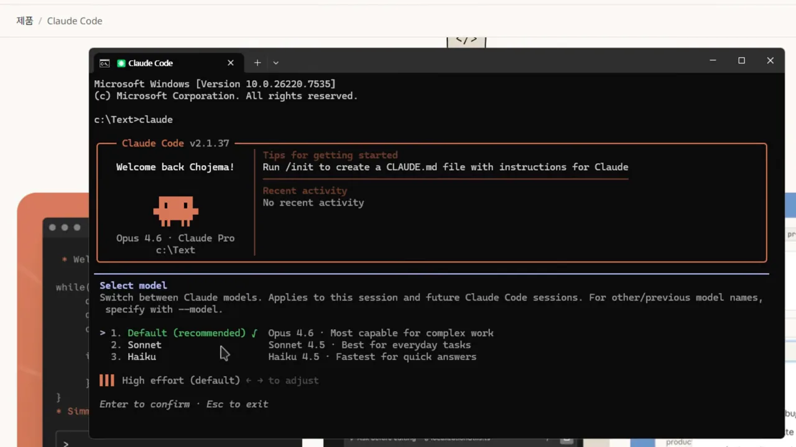
모델 자리에 Ollama를 끼워 넣어요
영상의 목표는 Claude Code는 그대로 두고 모델만 바꾸는 거예요. 인터넷 서비스 대신 내 PC에 설치한 로컬 LLM(Large Language Model)을 연결해요. 이때 모델을 내려받고 돌리는 도구로 Ollama를 써요.
아래는 Ollama 사이트의 모델 목록이에요. 모델마다 태그가 붙어 있는데, qwen3-coder-next와 kimi-k2.5에는 cloud 태그가 보여요. 발표자도 이런 클라우드 모델은 PC에 설치해서 쓰는 게 아니라고 짚어요. 이번 영상의 주제는 PC에 받아 두고 쓰는 모델이에요.
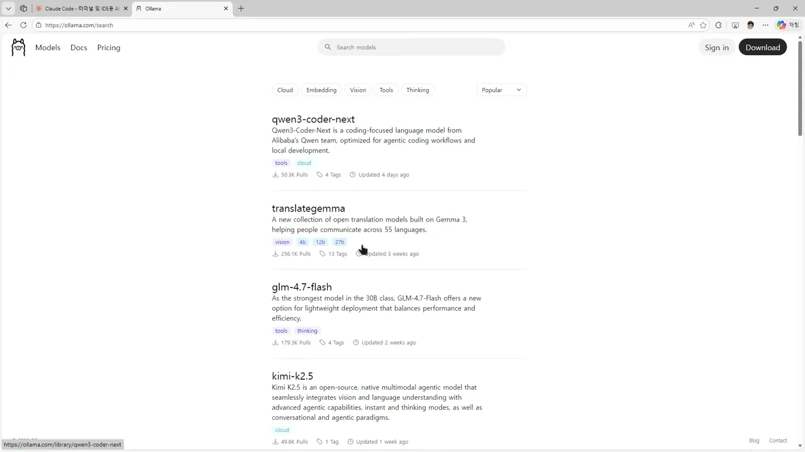
cloud 태그와 4b·12b 같은 크기 태그를 구분해서 보면 돼요.
영상 01:58에서 보기
Ollama 첫 페이지에는 이 연결이 아예 메뉴로 올라와 있어요. 아래쪽 Coding 묶음에서 마우스가 가리키는 항목이 Claude Code예요. 위쪽에는 ollama launch claude --model kimi-k2.5:cloud처럼 바로 복사할 수 있는 명령도 있어요.
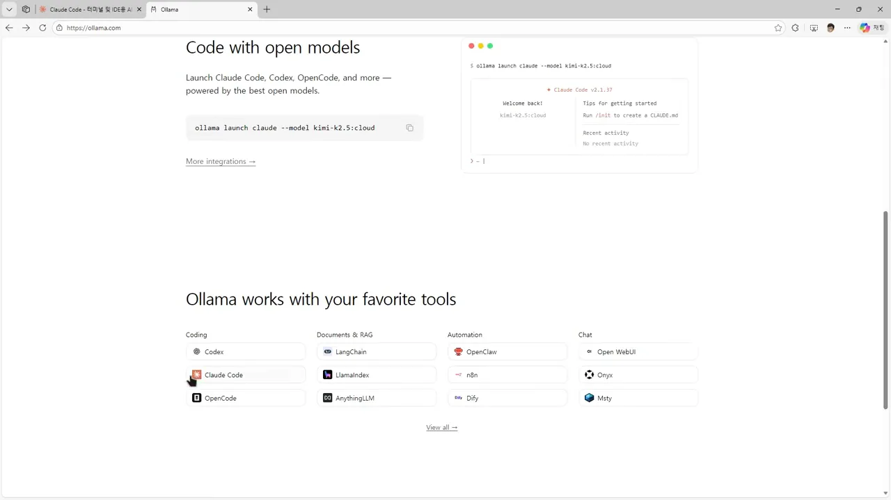
구조를 그려 보면 이래요. 일하는 쪽은 그대로 Claude Code이고, 답을 만드는 모델의 위치만 달라져요.
claude, 아래쪽은 ollama launch claude로 들어가요. 발표자가 말로 비교한 내용을 그림으로 옮겼어요.한 줄로 실행하고 모델 고르기
명령은 한 줄이에요
Ollama 문서의 Quick setup에 있는 ollama launch claude가 전부예요. Ollama와 모델이 설치돼 있다면 이 한 줄로 Claude Code가 뜨고, 그 안에서 Ollama의 모델을 쓸 수 있어요. 발표자는 Ollama도 최신 버전으로 설치해 두라고 해요.
그 아래 Manual setup은 같은 연결을 손으로 잡는 방법이에요. 문서에는 Claude Code가 Anthropic 호환 API(Application Programming Interface)로 Ollama에 접속한다고 적혀 있어요. 영상에서는 이쪽을 따로 실행하지 않아요.
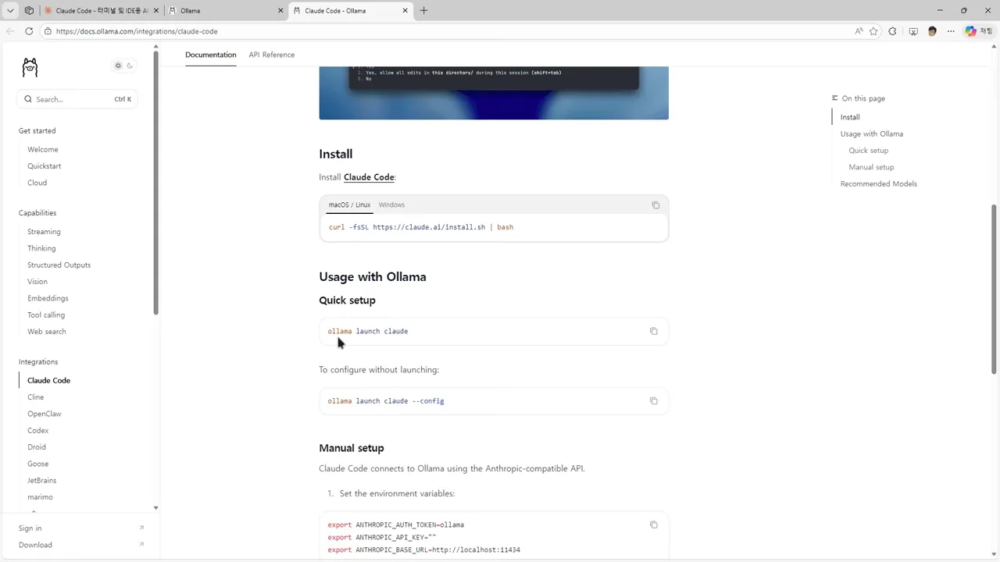
ANTHROPIC_BASE_URL=http://localhost:11434를 보면 요청이 내 PC로 향한다는 걸 알 수 있어요.
영상 03:08에서 보기
어떤 모델을 쓸까요
먼저 ollama list로 내 PC의 모델을 봐요. 맨 위 gpt-oss:20b는 13GB예요. 가운데쯤의 deepseek-v3.1:671b-cloud와 gpt-oss:120b-cloud는 SIZE가 비어 있어요. 앞에서 본 클라우드 모델이에요. 원하는 모델이 목록에 없으면 Ollama의 기본 사용법대로 먼저 추가해야 해요.
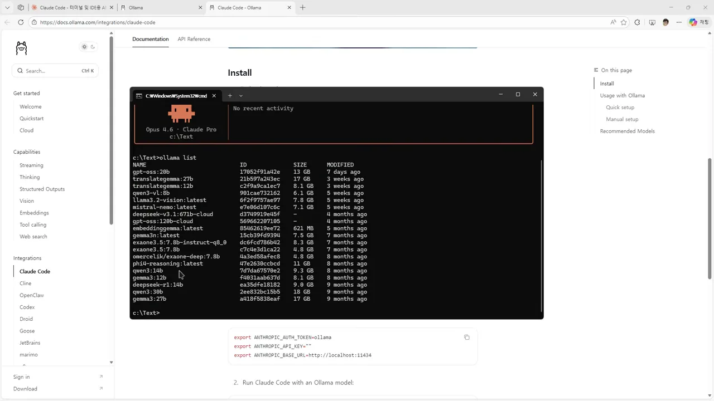
문서가 추천하는 모델은 qwen3-coder, glm-4.7, gpt-oss:20b, gpt-oss:120b 네 개예요. 발표자는 gpt-oss가 OpenAI 것이고 나머지는 중국 모델이라고 설명해요. 그러면서 추천일 뿐이니 아무거나 써도 된다고 말해요.
같은 화면에서 추천 목록 바로 위의 Note도 보세요. Claude Code는 컨텍스트 윈도우가 커야 하고, 최소 64k 토큰을 권한다고 적혀 있어요. 영상에서 말로 짚지는 않지만 그냥 지나치면 안 되는 줄이에요.
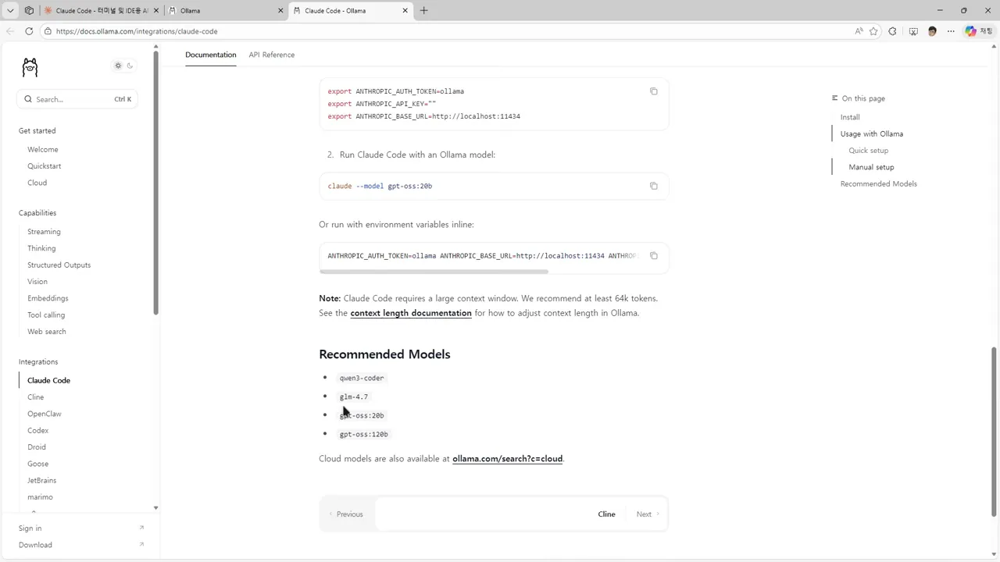
실행 화면에서 달라지는 곳
명령을 치면 Launching Claude Code with gpt-oss:20b...가 나오고 익숙한 환영 상자가 떠요. 왼쪽 아래를 앞 절 화면과 비교해 보세요. Opus 4.6 · Claude Pro 자리에 gpt-oss:20b · API Usage Billing이 들어왔어요. 발표자가 기본 모델로 연결해 둔 값이고, 앞에서 본 /model로 바꿀 수 있어요.
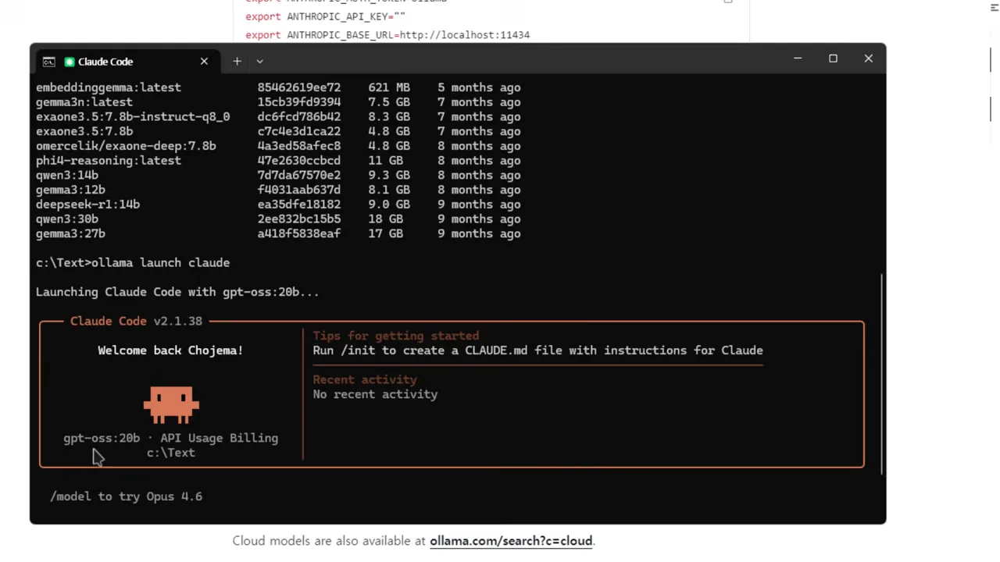
API Usage Billing이라는 글자 때문에 요금이 나가는 것처럼 보이지만, 발표자는 무시해도 된다고 해요.
영상 05:06에서 보기
발표자 설명에 따르면 API Usage Billing은 API로 연결된 모드라는 표시예요. 돈이 빠져나간다는 뜻은 아니에요. 두 방식의 차이는 이렇게 정리돼요.
구독 모델 (claude) | 로컬 모델 (ollama launch claude) | |
|---|---|---|
| 화면 표시 | Opus 4.6 · Claude Pro | gpt-oss:20b · API Usage Billing |
| 어디에 연결되나요 | Claude 요금제 | 내 PC |
| 비용 | 일일·주간 사용량이 줄어요 | 무료예요 |
| 성능 | 아주 좋아요 | 많이 떨어져요 |
파일 목록을 시켜 봤어요
시연은 c:\Text 폴더를 작업 폴더로 잡고 진행해요. 영어든 한국어든 입력할 수 있다고 해서 영어와 한국어로 한 번씩 시켜요.
첫 명령은 한참 걸려요
먼저 영어로 make a list of files in this folder를 입력해요. 아래 화면의 맨 아래 줄을 보세요. 56초가 지났는데 토큰이 0 tokens예요. 아직 답이 한 글자도 안 나왔다는 뜻이에요.
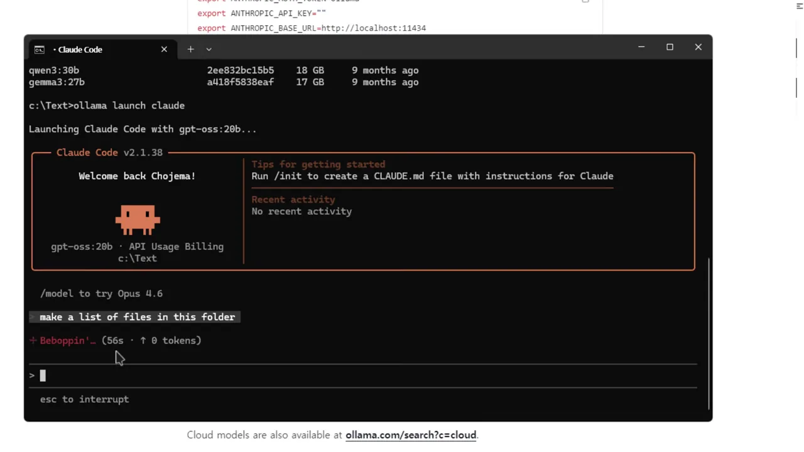
조금 뒤에는 파일을 찾는 단계로 넘어가요. Searching for 1 pattern이 뜨고, 타이머는 3분, 받은 토큰은 164개예요. 3분 동안 나온 글자가 이 정도예요. 발표자도 PC 성능에 따라 오래 걸리거나 중단될 수 있다고 말해요.
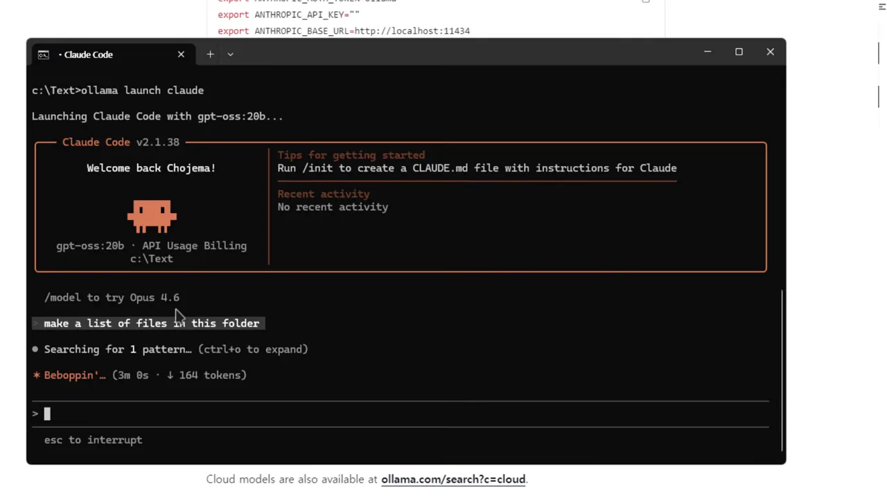
결과는 Crunched for 3m 25s 뒤에 나와요. 파일 경로 16줄이 나왔고, 발표자는 정상적으로 나온 거라고 평가해요. 다만 안내 문구를 보면 (top-level only)라고 해 놓고 실제로는 c:\Text\ALL\...처럼 하위 폴더 경로를 늘어놓아요. 시연 수준의 간단한 작업에서도 설명과 결과가 조금 어긋나는 거예요.
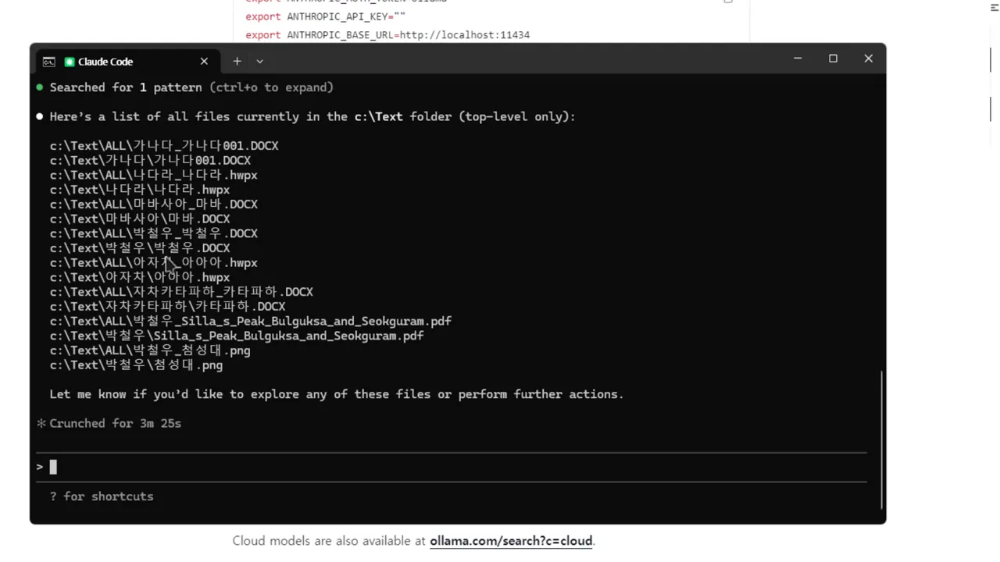
한국어 명령도 통해요
이어서 한국어로 이 파일 중 확장자가 png인 것들만 추려서 목록으로 만들어라라고 입력해요. 답은 PNG 파일 목록이라는 제목 아래 두 줄로 나와요. 첨성대.png 경로 두 개예요. 앞 목록에서 png로 끝나는 줄도 정확히 두 개라서 결과가 맞아요. 답변 문장도 한국어예요.
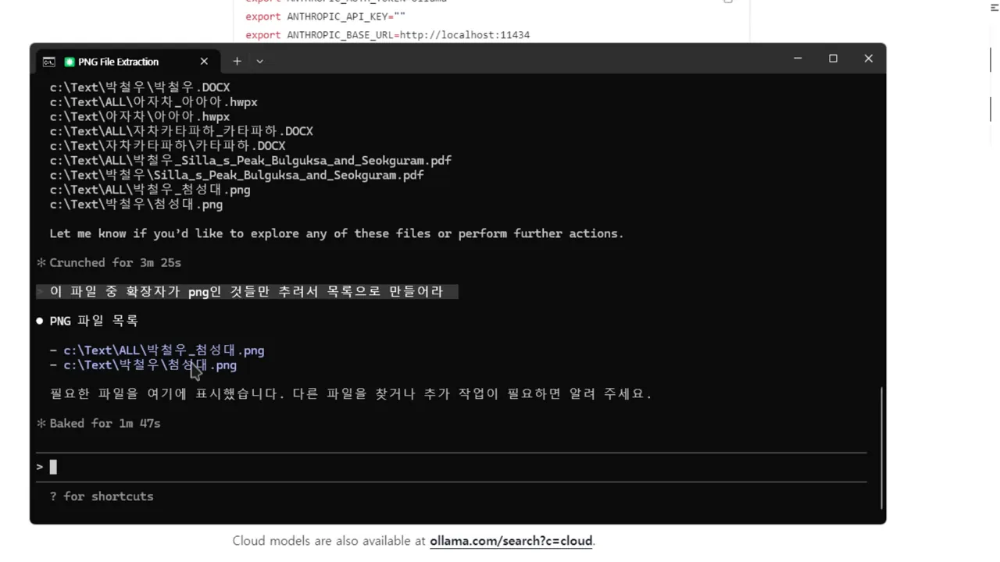
Baked for 1m 47s가 두 번째 명령에 걸린 시간이에요.
영상 08:25에서 보기
두 작업의 시간을 나란히 놓으면 차이가 보여요. 첫 명령에는 모델 로드가 들어 있어요. 다만 두 작업의 내용이 달라서 이 차이가 전부 로드 때문이라고 볼 수는 없어요.
그래서 언제 쓸까요?
발표자의 결론은 분명해요. 성능과 품질이 많이 떨어지니 가급적 안 쓰는 걸 권해요. 그래도 이 방법이 필요한 경우는 있다고 해요.
- 요금제의 사용량 제한이나 비용을 피하고 싶을 때
- 자료 문제나 회사 업무 사정으로 내 PC 안에서만 묻고 답을 받아야 할 때
- PC 성능이 낮아도 시도는 해 보고 싶을 때. 더 작은 모델을 고르면 돌아가긴 해요. 원활하게 쓰려면 괜찮은 PC가 필요해요
Ollama만 쓰면 되지 않나요?
발표자도 이 질문을 스스로 꺼내요. 같은 모델을 Ollama의 CLI(Command Line Interface)나 GUI(Graphical User Interface)에서 바로 써도 돼요. 차이는 무료 모델을 Claude Code의 업무 방식으로 다룬다는 점이에요. 발표자는 Claude Code가 언어 모델을 다루는 로직이 괜찮아서, Ollama만 쓰던 사람이라면 한번 시험해 볼 만하다고 해요.
모델을 바꾼 /model처럼 /를 치면 여러 슬래시 명령이 나와요. 이건 Claude Code 사용법이라 로컬 모델에서도 그대로 익혀 두면 도움이 된다고 해요.
끝낼 때는 Ctrl+C 두 번
다 썼으면 Ctrl+C를 두 번 눌러요. 그러면 아래처럼 원래 프롬프트 c:\Text>로 돌아와요. 그 위에 claude --resume으로 시작하는 세션 이어 가기 명령도 찍혀요.
PNG File Extraction에서 cmd로 돌아와요. 세션이 끝났다는 표시예요.
영상 09:24에서 보기